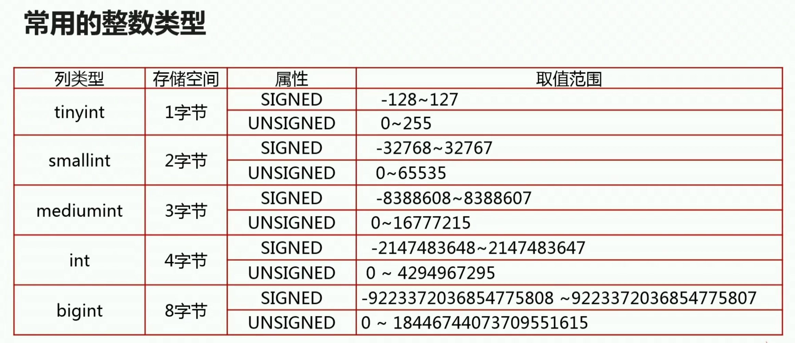
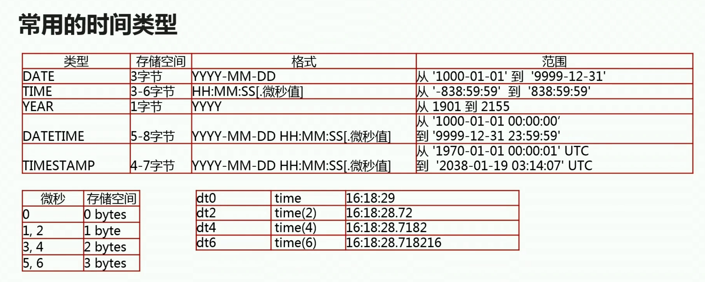
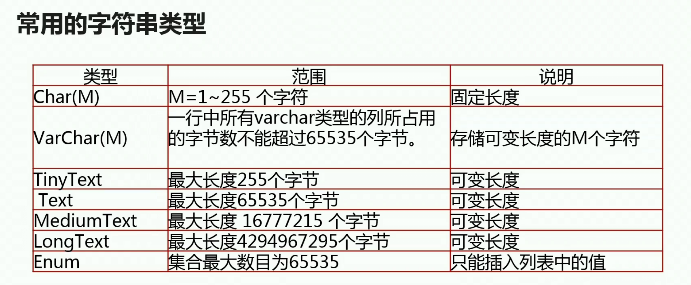
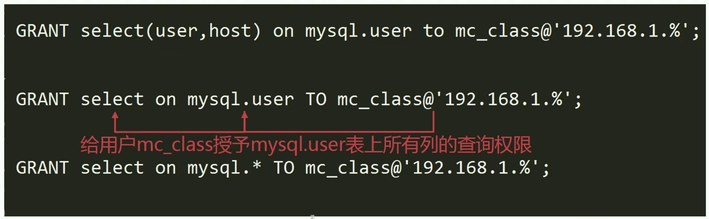

- 学习备注与扩展
- 数据库需求分析，设计这块，后续需要自己跟着老师的设计进行思考，再学习一遍。（第三章前面部分）
- 需要熟悉各个常见MySQL引擎，了解使用场景，优缺点等等。
- 熟悉（记忆、理解）三范式
- 学习了解一下课程中创建的表
- 学习环境
MySQL8.0.15、CentOS7、SQLyog
数据库选型
SQL（关系型数据库）
MySQL、oracle、SQLServer、PostGreSQL
特点
数据结构化存储在二维表中
支持事物的ACID特性
支持使用SQL语言对存储在其中的数据进行操作
适用场景
数据之间存在着一定关系，需要关联查询数据的场景
需要事物支持业务场景
需要使用SQL语言灵活操作数据的场景
NOSQL（非关系型数据库）
HBase、MOngoDB、Redis、Hadoop
特点
- 存储结构灵活，没有固定的结构
- 对事物的支持比较弱，但对数据的并发处理性能高
- 大多不使用SQL语言操作数据
适用场景
- 数据结构不固定的场景
- 对事物要求不高，但读写并发比较大的场景
- 对数据的处理操作比较简单的场景
关系型数据库选型原则
- 广泛性、可扩展性、安全性和稳定性、数据库所支持的系统、使用成本
选择MySQL数据库
可扩展性
支持基于二进制日志的逻辑复制
存在多种第三方数据库中间层，支持读写分离、分库分表
安全性和稳定性
MySQL主从复置集群可达到99%的可用性
配合主从复置高可用架构可以达到99%的可用性
支持对存储在MySQL的数据进行分级安全控制
支持的系统：支持Windows、linux系统
使用成本
社区版本免费
使用人员众多，方便获取技术支持
MySQL实验环境搭建
环境准备
- VirtualBox、CentOS-7-x86_64-DVD-1611.iso、MySQL8.0.15、
虚拟机环境搭建
（1）安装 VirtualBox
（2）在 VirtualBox 中安装 CentOS（CentOS-7-x86_64-DVD-1611）
设置网络为桥接网卡
（3）配置虚拟机环境
设置静态ip
1
2
3
4
5
6cd /etc/sysconfig/network-scripts
通过ip addr 命令获取网卡名称
ip addr
vi ifcfg-enp0s31
2
3
4
5
6
7
8
9
10
11
12
13
14
15
16
17
18
19
20
21TYPE=Ethernet
BOOTPROTO=none # 关闭自动获取ip，设置为静态ip
DEFROUTE=yes
PEERDNS=yes
PEERROUTES=yes
IPV4_FAILURE_FATAL=no
IPV6INIT=no # 关闭ipv6
IPV6_AUTOCONF=yes
IPV6_DEFROUTE=yes
IPV6_PEERDNS=yes
IPV6_PEERROUTES=yes
IPV6_FAILURE_FATAL=no
IPV6_ADDR_GEN_MODE=stable-privacy
NAME=enp0s3
UUID=c43ba353-8a1c-4c0c-9c24-04d308950e1b
DEVICE=enp0s3
ONBOOT=yes # 开机自动启动网卡
IPADDR=10.2.103.103 # 配置静态ip
NETMASK=255.255.254.0 # 子网掩码
GATEWAY=10.2.103.254 # 网关
DNS1=8.8.8.8修改主机名
1
2
3
4
5vi /etc/hostname
sorozy-mysql
reboot
下载、安装与配置MySQL8.0.15
1 | 确保wget可以使用 |
修改my.cnf
1
2
3
4
5
6
7
8
9
10
11
12
13
14
15
16
17
18
19
20
21
22
23
24
25
26
27
28
29
30
31
32
33
34
35
36
37
38
39
40
41
42
43
44
45
46
47
48
49
50
51
52
53
54
55
56
57
58
59
60
61
62
63
64
65
66
67
68
69
70
71
72
73
74
75
76
77
78
79
80
81
82
83
84
85
86
87
88
89
90
91
92
93
94
95
96
97
98
99
100
101
102
103
104
105
106
107
108
109
110
111
112
113
114
115
116
117
118
119
120
121
122
123
124
125
126[client]
port = 3306
socket = /usr/local/mysql/data/mysql.sock
[mysqld]
Skip #
skip_name_resolve = 1
skip_external_locking = 1
skip_symbolic_links = 1
GENERAL #
user = mysql
default_storage_engine = InnoDB
character-set-server = utf8
socket = /usr/local/mysql/data/mysql.sock
pid_file = /usr/local/mysql/data/mysqld.pid
basedir = /usr/local/mysql
port = 3306
bind-address = 0.0.0.0
explicit_defaults_for_timestamp = off
sql_mode=NO_ENGINE_SUBSTITUTION,STRICT_TRANS_TABLES
read_only=on
MyISAM #
key_buffer_size = 32M
myisam_recover = FORCE,BACKUP
undo log #
innodb_undo_directory = /usr/local/mysql/undo
innodb_undo_tablespaces = 8
SAFETY #
max_allowed_packet = 100M
max_connect_errors = 1000000
sysdate_is_now = 1
innodb = FORCE
innodb_strict_mode = 1
secure-file-priv='/tmp'
default_authentication_plugin='mysql_native_password'
Replice #
server-id = 1001
relay_log = mysqld-relay-bin
gtid_mode = on
enforce-gtid-consistency
log-slave-updates = on
master_info_repository =TABLE
relay_log_info_repository =TABLE
DATA STORAGE #
datadir = /usr/local/mysql/data/
tmpdir = /tmp
BINARY LOGGING #
log_bin = /usr/local/mysql/sql_log/mysql-bin
max_binlog_size = 1000M
binlog_format = row
binlog_expire_logs_seconds=86400
sync_binlog = 1
CACHES AND LIMITS #
tmp_table_size = 32M
max_heap_table_size = 32M
max_connections = 4000
thread_cache_size = 2048
open_files_limit = 65535
table_definition_cache = 4096
table_open_cache = 4096
sort_buffer_size = 2M
read_buffer_size = 2M
read_rnd_buffer_size = 2M
thread_concurrency = 24
join_buffer_size = 1M
table_cache = 32768
thread_stack = 512k
max_length_for_sort_data = 16k
INNODB #
innodb_flush_method = O_DIRECT
innodb_log_buffer_size = 16M
innodb_flush_log_at_trx_commit = 2
innodb_file_per_table = 1
innodb_buffer_pool_size = 256M
innodb_buffer_pool_instances = 8
innodb_stats_on_metadata = off
innodb_open_files = 8192
innodb_read_io_threads = 16
innodb_write_io_threads = 16
innodb_io_capacity = 20000
innodb_thread_concurrency = 0
innodb_lock_wait_timeout = 60
innodb_old_blocks_time=1000
innodb_use_native_aio = 1
innodb_purge_threads=1
innodb_change_buffering=all
innodb_log_file_size = 64M
innodb_log_files_in_group = 2
innodb_data_file_path = ibdata1:256M:autoextend
innodb_rollback_on_timeout=on
LOGGING #
log_error = /usr/local/mysql/sql_log/mysql-error.log
log_queries_not_using_indexes = 1
slow_query_log = 1
slow_query_log_file = /usr/local/mysql/sql_log/slowlog.log
TimeOut #
interactive_timeout = 30
wait_timeout = 30
net_read_timeout = 60
[mysqldump]
quick
max_allowed_packet = 100M
[mysql]
no-auto-rehash
Remove the next comment character if you are not familiar with SQL
safe-updates
[myisamchk]
key_buffer_size = 256M
sort_buffer_size = 256M
read_buffer = 2M
write_buffer = 2M
[mysqlhotcopy]
interactive-timeout新建文件目录
1
2
3
4
5cd /usr/local/mysql/
mkdir data sql_log undo
chown mysql:mysql -R data/ sql_log/ undo/环境变量配置
1
2
3
4
5
6vi /etc/profile
添加下面这行代码
export PATH=$PATH:/usr/local/mysql/bin
source /etc/profile
初始化与启动MySQL
1 |
|
start
1
2
3
4
5
6
7进入/usr/local/mysql/support-files
cp mysql.server /etc/init.d/mysqld
/etc/init.d/mysqld start
查看mysql进程
ps -ef | grep mysql修改密码
1
2
3
4
5
6
7cd sql_log/
得到初始化密码
grep password mysql-error.log
登录进入数据库后修改密码
alter user user() identified by '111111';
数据库设计实战
需求分析与设计
- 宽表存在的问题
- 数据插入异常：部分数据由于缺失主键信息而无法写入表中
- 数据更新异常：修改一行中某列的值时，同时修改了多行数据
- 数据删除异常：删除某一数据时不得不删除另一数据
- 数据冗余：相同的数据在一个表中出现了多次
- 宽表模式存在的问题
- 配合列存储的数据报表应用
数据库设计三范式
第一范式：要求有主键，并且要求每一个字段原子性不可再分
第二范式：要求所有非主键字段完全依赖主键，不能产生部分依赖
第三范式：非主键列之间不能相互依赖。所有非主键字段和主键字段之间不能产生传递依赖
常用MySQL存储引擎
数据类型



为数据选择合适的数据类型
为表和列选择合适的名字
访问/连接MySQL
- 命令行
1 | mysql -uroot -p -hlocalhost |
- 设置mysql可以使用root账户远程登录
1 | update user set host='%' where user='root'; |
MySQL的常用权限
| 权限名称 | 说明 |
|---|---|
| insert | 向表中插入数据的权限 |
| delete | 删除表中数据的权限 |
| update | 修改表中数据的权限 |
| select | 查询表中数据的权限 |
| execute | 执行存储过程的权限 |
MySQL 数据类型
数值类型
| 类型 | 大小 | 范围（有符号） | 范围（无符号） | 用途 |
|---|---|---|---|---|
| TINYINT | 1 byte | (-128，127) | (0，255) | 小整数值 |
| SMALLINT | 2 bytes | (-32 768，32 767) | (0，65 535) | 大整数值 |
| MEDIUMINT | 3 bytes | (-8 388 608，8 388 607) | (0，16 777 215) | 大整数值 |
| INT或INTEGER | 4 bytes | (-2 147 483 648，2 147 483 647) | (0，4 294 967 295) | 大整数值 |
| BIGINT | 8 bytes | (-9,223,372,036,854,775,808，9 223 372 036 854 775 807) | (0，18 446 744 073 709 551 615) | 极大整数值 |
| FLOAT | 4 bytes | (-3.402 823 466 E+38，-1.175 494 351 E-38)，0，(1.175 494 351 E-38，3.402 823 466 351 E+38) | 0，(1.175 494 351 E-38，3.402 823 466 E+38) | 单精度 浮点数值 |
| DOUBLE | 8 bytes | (-1.797 693 134 862 315 7 E+308，-2.225 073 858 507 201 4 E-308)，0，(2.225 073 858 507 201 4 E-308，1.797 693 134 862 315 7 E+308) | 0，(2.225 073 858 507 201 4 E-308，1.797 693 134 862 315 7 E+308) | 双精度 浮点数值 |
| DECIMAL | 对DECIMAL(M,D) ，如果M>D，为M+2否则为D+2 | 依赖于M和D的值 | 依赖于M和D的值 | 小数值 |
日期和时间类型
| 类型 | 大小 ( bytes) | 范围 | 格式 | 用途 |
|---|---|---|---|---|
| DATE | 3 | 1000-01-01/9999-12-31 | YYYY-MM-DD | 日期值 |
| TIME | 3 | ‘-838:59:59’/‘838:59:59’ | HH:MM:SS | 时间值或持续时间 |
| YEAR | 1 | 1901/2155 | YYYY | 年份值 |
| DATETIME | 8 | 1000-01-01 00:00:00/9999-12-31 23:59:59 | YYYY-MM-DD HH:MM:SS | 混合日期和时间值 |
| TIMESTAMP | 4 | 1970-01-01 00:00:00/2038结束时间是第 2147483647 秒，北京时间 2038-1-19 11:14:07，格林尼治时间 2038年1月19日 凌晨 03:14:07 | YYYYMMDD HHMMSS | 混合日期和时间值，时间戳 |
字符串类型
| 类型 | 大小 | 用途 |
|---|---|---|
| CHAR | 0-255 bytes | 定长字符串 |
| VARCHAR | 0-65535 bytes | 变长字符串 |
| TINYBLOB | 0-255 bytes | 不超过 255 个字符的二进制字符串 |
| TINYTEXT | 0-255 bytes | 短文本字符串 |
| BLOB | 0-65 535 bytes | 二进制形式的长文本数据 |
| TEXT | 0-65 535 bytes | 长文本数据 |
| MEDIUMBLOB | 0-16 777 215 bytes | 二进制形式的中等长度文本数据 |
| MEDIUMTEXT | 0-16 777 215 bytes | 中等长度文本数据 |
| LONGBLOB | 0-4 294 967 295 bytes | 二进制形式的极大文本数据 |
| LONGTEXT | 0-4 294 967 295 bytes | 极大文本数据 |
SQL(structured query language)
- RDBMS（关系型数据库管理系统，全称 Relational Database Management Syste）
常用的SQL语言种类
DCL 数据库管理语句/访问控制语句
1 | # 创建用户 `@'%'`访问控制列表，决定用户可以从哪些客户端访问。max_user_connections 最多的连接线程数 |
- 给账号授权举例

- 回收账户权限举例
DDL 数据定义
1 | create/alter/drop database |
1 | alter table table_name add col_name col_type comment 'xxx'; |
DML 表操作
1 | insert |
1 | drop table if exists imc_class; |
1 | insert into imc_class (class_name) values ("数据库"),("java"); |
TCL 事物控制
聚合函数
| AVG() | 求平均值 |
|---|---|
| COUNT() | 统计行的数量 |
| MAX() | 求最大值 |
| MIN() | 求最小值 |
| SUM() | 求累加和 |
Limit子句限制返回行数
1 | # 返回第a行起，后b行内容 |
random
1 | # 随机选择 |
date
常用的时间函数
| 函数名 | 说明 |
|---|---|
| curdate()/curtime() | 返回当前日期/返回当前时间 |
| now() | 返回当前的日期和时间 |
| date_formate(date,fmt) | 按照fmt的格式，对日期date进行格式化 |
| sec_to_time(seconds) | 把秒数转换为(小时:分:秒) |
| time_to_sec(time) | 把(小时:分:秒)转换为秒数 |
公共表表达式
SQL优化
步骤
发现问题>分析执行计划>优化索引>改写SQL
数据库垂直切分、数据库水平切分
发现有性能问题的SQL
- 用户主动上报应用性能问题
- 分析慢查询日志，发现存在问题的SQL
- 数据库实时监控长时间运行的SQL
配置慢查询日志
1 | # 开启慢查询日志（on） |
分析MySQL慢查询日志的工具
mysqldumpslow
Pt-query-digest
- 下载安装工具
1 | # 访问 https://www.percona.com/downloads/percona-toolkit/LATEST/ |
启用慢查询日志
1 | show variables like 'long_query_time'; |
分析慢查询日志
1 | mysqldumpslow slowlog.log |
实时监控sql
分析SQL执行计划
获取SQL执行计划
事务与并发控制
- 事务是数据库执行操作的最小逻辑单元
- 事务可以由一个sql组成也可以由多个sql组成
- 组成事务的sql要么全部成功要么全部失败
1 | # BEGIN 或 START TRANSACTION 显式地开启一个事务 |
ACID
- 原子性：一个事务（transaction）中的所有操作，要么全部完成，要么全部不完成，不会结束在中间某个环节。事务在执行过程中发生错误，会被回滚（Rollback）到事务开始前的状态，就像这个事务从来没有执行过一样。
- 一致性：在事务开始之前和事务结束以后，数据库的完整性没有被破坏。这表示写入的资料必须完全符合所有的预设规则，这包含资料的精确度、串联性以及后续数据库可以自发性地完成预定的工作。
- 隔离性：数据库允许多个并发事务同时对其数据进行读写和修改的能力，隔离性可以防止多个事务并发执行时由于交叉执行而导致数据的不一致。事务隔离分为不同级别，包括读未提交（Read uncommitted）、读提交（read committed）、可重复读（repeatable read）和串行化（Serializable）。
- 持久性：事务处理结束后，对数据的修改就是永久的，即便系统故障也不会丢失。
脏读
不可重复读
幻读
INNODB的事务隔离级别
默认：可重复读
##